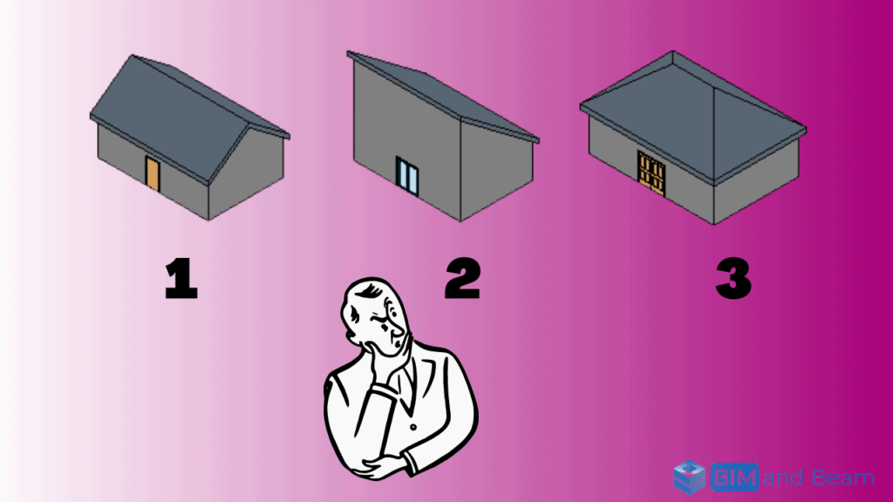

Inside a Data Center
A visual guide to understanding, designing, and speaking the language of data centers. Free 9-page preview, no strings attached.
Get the free previewAs an architect or BIM designer using Revit, you know how important it is to have the ability to explore and compare different design options. That’s where the Autodesk Revit Design Option feature comes in. This powerful tool allows you to create and compare multiple design alternatives within a single project file. By making it easy to explore different approaches and make informed decisions about your project.

In this blog post, we’ll take a closer look at the “Design Option” feature in Revit. Including how to create and modify design options, how to compare different options. And how to manage multiple options within a project. Whether you’re new to Revit or an experienced user. This post will give you a better understanding of how to use the “Design Option” feature to its full potential.
What is the ” Revit Design Option” feature?
The “Design Option” feature in Revit is a tool that allows users to create and compare different design alternatives within a single project file. This can be useful when you want to explore different design approaches or when you need to present multiple options to a client.
To use the “Design Option” feature in Revit. You first need to open your project and navigate to the “Revit Design Option” tab in the ribbon. From here, you can click the “Create Design Option” button to start a new design option. When you create a new design option, you can give it a name and add a description if desired.
Once you have created a design option, you can make changes to the model as needed to reflect the design option. These changes can include modifying elements, adding or deleting elements, or changing element properties. When you are finished making changes, you can click the “Finish Design Option” button to save your changes and return to the “Design Option” tab.
You can repeat this process to create additional design options as needed. To compare the different design options, you can use the “Design Option” tab in the ribbon to switch between the options and see how they differ. This can be helpful when trying to decide which option is the best fit for your project.

In addition to creating and comparing design options, the “Revit Design Option” feature also allows you to merge or delete options, or to set a specific option as the default. To merge two options, you can select both options in the “Design Option” tab and click the “Merge Options” button. This will combine the two options into a single option, with all the changes from both options being applied to the merged option.
To delete a design option, you can select the option in the “Design Option” tab and click the “Delete Option” button. This will permanently remove the option from the project.
Finally, you can set a specific design option as the default option for the project by selecting the option in the “Revit Design Option” tab and clicking the “Set as Default” button. This will make the selected option the default option that is displayed when the project is opened.
reasons why BIM architects may want to use the Revit Design Option:
There are several reasons why BIM (Building Information Modeling) architects may want to use the “Revit Design Option” feature:
- To explore different design approaches. The “Design Option” feature allows architects to create and compare multiple design alternatives within a single project file. This can be helpful when trying to decide which design approach is the best fit for a project.
- To present options to clients. By creating multiple design options, architects can present different approaches to a project to clients and get their feedback. This can help architects better understand the client’s needs and preferences, and ultimately deliver a design that meets their expectations.
- To make informed decisions. By comparing different design options side-by-side, architects can evaluate the pros and cons of each option and make more informed decisions about their projects.
- To save time and reduce errors. By using the “Design Option” feature, architects can avoid the need to create multiple copies of a project file to explore different design approaches. This can save time and reduce the risk of errors, as all the design options are contained within a single file.
Overall, the “Design Option” feature in Revit is a useful tool for BIM architects. Because it allows them to explore and compare different design approaches. And present options to clients, make informed decisions, save time and reduce errors.
How to create a Revit Design Option? a step-by-step instructions
To create a new design option in Revit, follow these steps:
- Open your Revit project and navigate to the “Design Option” tab in the ribbon.
- Click the “Create Design Option” button to start a new design option.
- In the “Create Design Option” dialog box, enter a name for your design option in the “Name” field. This name will be used to identify the design option in the “Design Option” tab and in other parts of Revit.
- If desired, you can add a description of the design option in the “Description” field. This can be helpful if you want to provide more information about the design option. Or if you have multiple design options and need to differentiate between them.
- Click “OK” to create the design option.
- Make changes to the model as needed to reflect the design option. These changes can include modifying elements, adding or deleting elements, or changing element properties.
- When you are finished making changes, click the “Finish Design Option” button to save your changes and return to the “Design Option” tab.
That’s it! You have now created a new design option in Revit. You can repeat this process to create additional design options as needed. To compare the different options, use the “Design Option” tab in the ribbon to switch between the options and see how they differ.
Making changes to a design option
To make changes to a design option in Revit, follow these steps:
- Open the design option that you want to modify. To do this, navigate to the “Design Option” tab in the ribbon. Then select the design option from the list of available options.
- Make changes to the model as needed to reflect the design option. You can modify existing elements, add new elements, or delete elements as needed.
If you want to modify an element:
- Select the element that you want to modify.
- In the “Properties” panel, you can change the element’s properties as desired. For example, you might change the element’s size, shape, color, or material.
- If the element has additional parameters, you can access them by clicking the “Edit Type” button in the “Properties” panel. This will open the “Type Properties” dialog box, where you can modify the element’s parameters as needed.
To add an element:
- Click the “Add” button in the ribbon and choose the type of element that you want to add (e.g. wall, door, window).
- Follow the prompts to place the element in the model.
- Modify the element’s properties as desired using the methods described above.
To delete an element:
- Select the element that you want to delete.
- Press the “Delete” key on your keyboard, or click the “Delete” button in the ribbon.
- When you are finished making changes to the design option, click the “Finish Design Option” button to save your changes and return to the “Design Option” tab.
In addition to modifying elements, adding elements, and deleting elements, you can also change element properties to reflect a design option. Element properties include things like size, shape, color, and material.
To change element properties:
- Select the element that you want to modify.
- In the “Properties” panel, you can change the element’s properties as desired. For example, you might change the element’s size, shape, color, or material.
- If the element has additional parameters, you can access them by clicking the “Edit Type” button in the “Properties” panel. This will open the “Type Properties” dialog box, where you can modify the element’s parameters as needed.
- Click “OK” to apply the changes and close the “Type Properties” dialog box.
By following these steps, you can make changes to a design option in Revit, including modifying elements, adding elements, and changing element properties. This can be helpful when you want to explore different design approaches or when you need to present multiple options to a client.
It’s important to note that changes made to a design option will only apply to that specific option. If you want to apply the changes to other design options or to the base model, you will need to repeat the process for each option or use the “Design Option” tab to merge the options.
In addition to the steps outlined above, there are many other tools and techniques that you can use to make changes to a design option in Revit. For example, you can use the “Copy/Paste” or “Duplicate” commands to copy elements from one design option to another, or you can use the “Link” feature to bring in external data or models. You can also use the “Workset” feature to control which elements are shared between design options and which are specific to each option.
Comparing design options
To switch between different design options in Revit and compare the options to see how they differ, follow these steps:
- Open your Revit project and navigate to the “Design Option” tab in the ribbon.
- In the “Design Option” tab, you will see a list of all the available design options for the project.
- To switch to a different design option, simply select the option from the list. The model will update to reflect the changes associated with the selected design option.
- To compare the different design options, you can switch between the options and observe how they differ. For example, you might look at the layout, size, or materials of the different options.
- If you want to see the differences between the design options more clearly, you can use the “Compare Options” tool. To access this tool, click the “Compare Options” button in the “Design Option” tab.
- In the “Compare Options” dialog box, you can select the design options that you want to compare and specify how you want to view the differences. For example, you can choose to view the differences in a 2D or 3D view, or you can choose to view the differences by category (e.g. walls, doors, windows).
- Click “OK” to apply the comparison settings and view the differences between the design options.
Using these steps, you can switch between different design options in Revit and compare the options to see how they differ. This can be helpful when you are trying to decide which option is the best fit for your project.
Merging, deleting, and setting default options
In addition to creating and comparing design options, the “Design Option” feature in Revit also allows you to merge, delete, or set a default design option. Here is how you can use these features in Revit:
To merge design options:
- Open your Revit project and navigate to the “Design Option” tab in the ribbon.
- In the “Design Option” tab, select the design options that you want to merge. You can select multiple options by holding down the “Ctrl” or “Shift” key while clicking on the options.
- Click the “Merge Options” button to merge the selected options into a single option.
- In the “Merge Options” dialog box, you can specify how you want to handle conflicts between the options. For example, you can choose to keep all the changes from both options, or you can choose to keep only the changes from one option.
- Click “OK” to apply the merge settings and create the merged option.
If you want To delete a design option:
- Open your Revit project and navigate to the “Design Option” tab in the ribbon.
- In the “Design Option” tab, select the design option that you want to delete.
- Click the “Delete Option” button to permanently remove the option from the project.
To set a default design option:
- Open your Revit project and navigate to the “Design Option” tab in the ribbon.
- In the “Design Option” tab, select the design option that you want to set as the default.
- Click the “Set as Default” button to make the selected option the default option for the project.
By using these features, you can easily manage multiple design options within a Revit project. The “Merge Options” feature can be particularly useful when you want to combine the changes from multiple design options into a single option, while the “Delete Option” and “Set as Default” features can help you keep your project organized and ensure that you are always working with the most up-to-date version of the design.
Revit design Option Tutorial
Conclusion
It’s important to note that the “Design Option” feature in Revit is highly flexible, and there are many other tools and techniques that you can use to manage design options. For example, you can use the “Workset” feature to control which elements are shared between design options and which are specific to each option, or you can use the “Link” feature to bring in external data or models. You can also use the “View” tab in the ribbon to change the way the model is displayed (e.g. by switching to a 3D view or a section view) or to use visualization tools (e.g. shadows, materials, lighting) to better understand the design options.
Overall, the “Design Option” feature in Revit is a powerful and flexible tool that allows users to explore and compare different design alternatives within a single project file. Whether you are an architect, designer, or engineer, the “Design Option” feature can help you make informed decisions about your projects and ensure that you are delivering the best possible results to your clients.